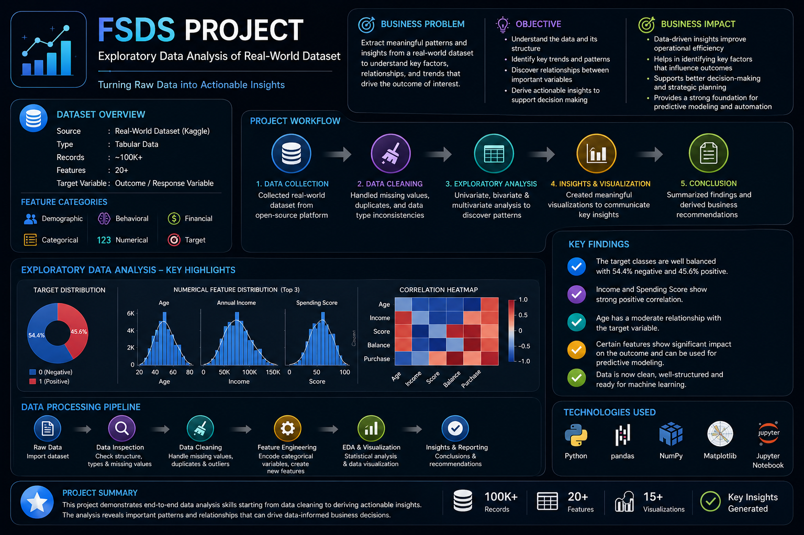
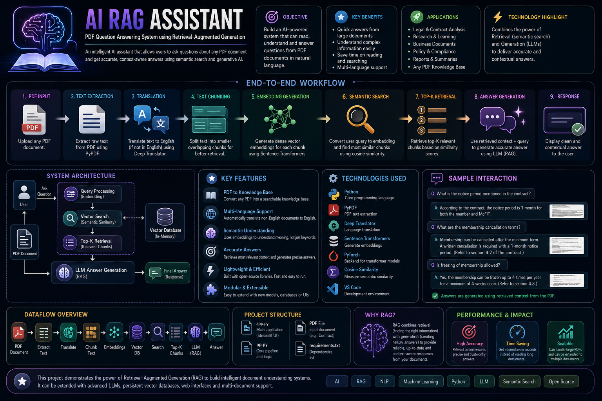
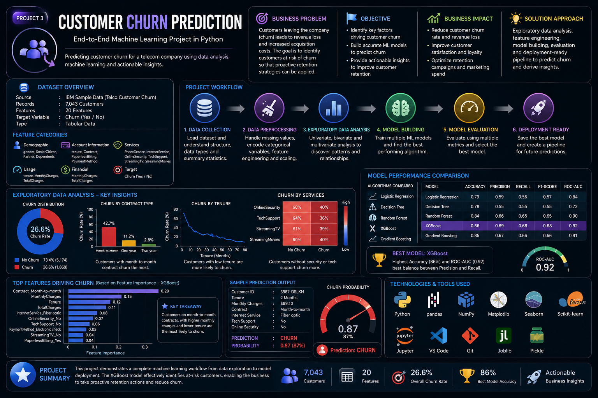
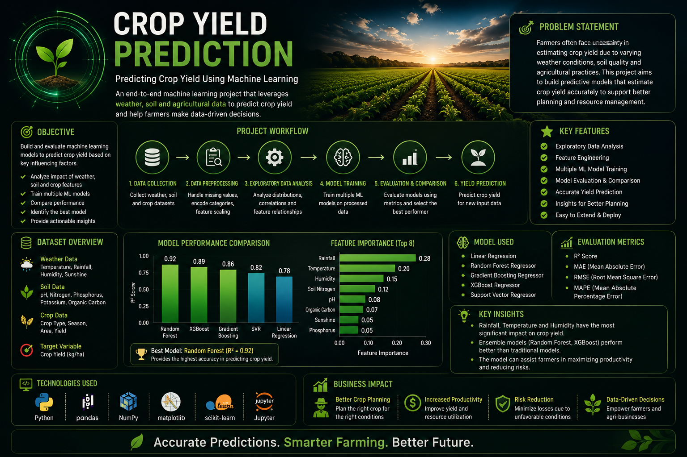
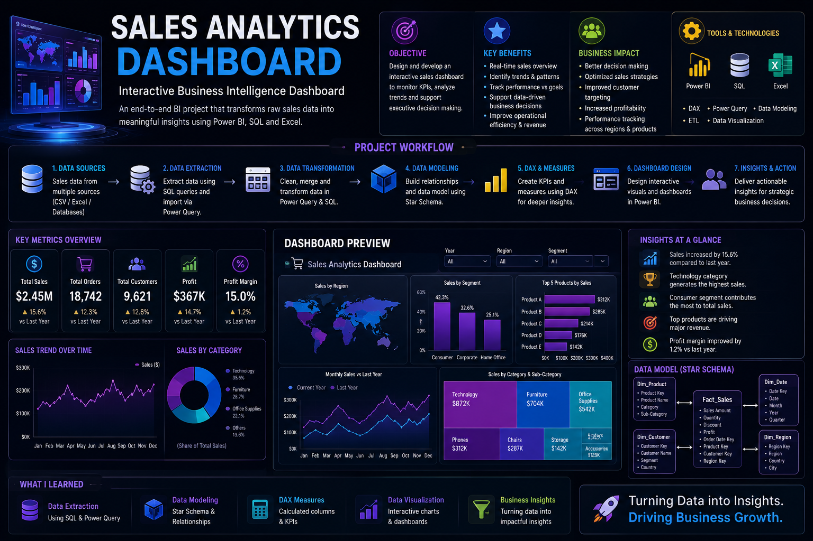
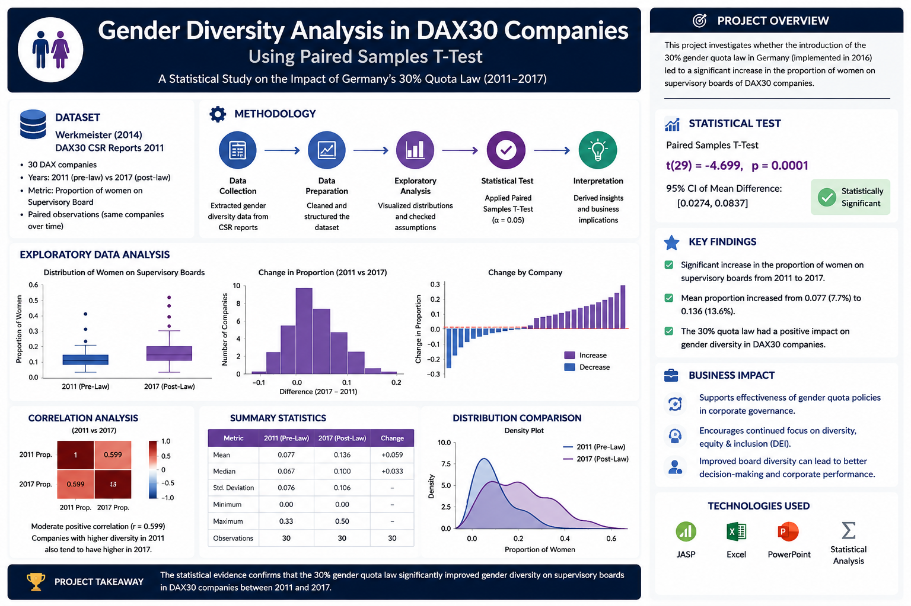
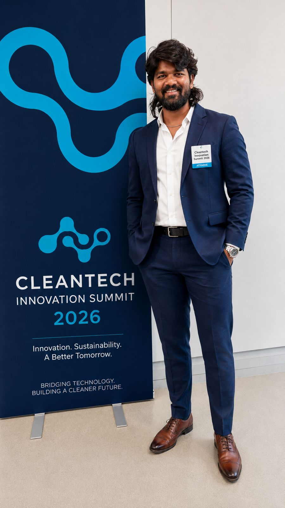

AI • DATA SCIENCE • BUSINESS ANALYTICS
I'm Sai Baba Kancherla, pursuing an M.Sc. in Applied Data Science & Artificial Intelligence at SRH University, Germany, with 2.5+ years of experience in Healthcare Analytics, Business Intelligence, and AI-powered decision support.
Years Experience
Featured Projects
Technologies
Industry Event
AI, Machine Learning & Business Analytics Projects

Performed healthcare quality analysis using Python, statistical methods and interactive dashboards to evaluate hospital performance.

Built an AI-powered Retrieval-Augmented Generation assistant using LlamaIndex, OpenAI and Qdrant for intelligent document search.

Developed a machine learning model to predict customer churn using classification algorithms and feature engineering.

Built predictive models to estimate crop yield using weather, soil and agricultural datasets.

Interactive business intelligence dashboard using Power BI, SQL and Excel for executive decision making.

Statistical research on sustainability reporting using paired t-tests, hypothesis testing and business analytics.
Learning from industry leaders and staying connected with emerging technologies.

Participated in the Cleantech Innovation Summit 2026, engaging with experts in Artificial Intelligence, Sustainability, Climate Technology, Energy Innovation, and Digital Transformation.
Professional learning and industry-recognized credentials.
Completed a virtual job simulation focused on business analytics, data visualization, dashboard creation, and practical data-driven decision making.
View CertificateAcademic journey in Data Science and Artificial Intelligence
2026 – 2028
2019 – 2023
I'm currently looking for Working Student, Internship and AI/Data Science opportunities across Germany and Europe.
Saibabakancherla@gmail.com
Nürnberg, Bavaria, Germany
✔ Working Student
✔ Internship
✔ Data Analyst
✔ AI Engineer
✔ Business Intelligence
2.5+ Years of Analytics & Business Intelligence Experience
I am currently pursuing an M.Sc. in Applied Data Science & Artificial Intelligence (Business Analytics) at SRH University, Germany.
With over 2.5 years of professional experience in Healthcare Analytics, Revenue Cycle Management, MIS Reporting, Business Intelligence, and Dashboard Automation, I specialize in transforming complex data into strategic business insights.
My interests include Artificial Intelligence, Machine Learning, Large Language Models, Retrieval-Augmented Generation (RAG), Predictive Analytics, and Business Intelligence solutions.
Technologies I use to build intelligent business solutions.
Python
SQL
Java
R
Machine Learning
LLMs
OpenAI API
RAG
Power BI
Excel
Tableau
Pandas
Scikit-Learn
NumPy
Statistics
Hypothesis Testing
Dashboarding
KPI Reporting
MIS Reporting
RCM Analytics
Git
GitHub
VS Code
Jupyter Notebook